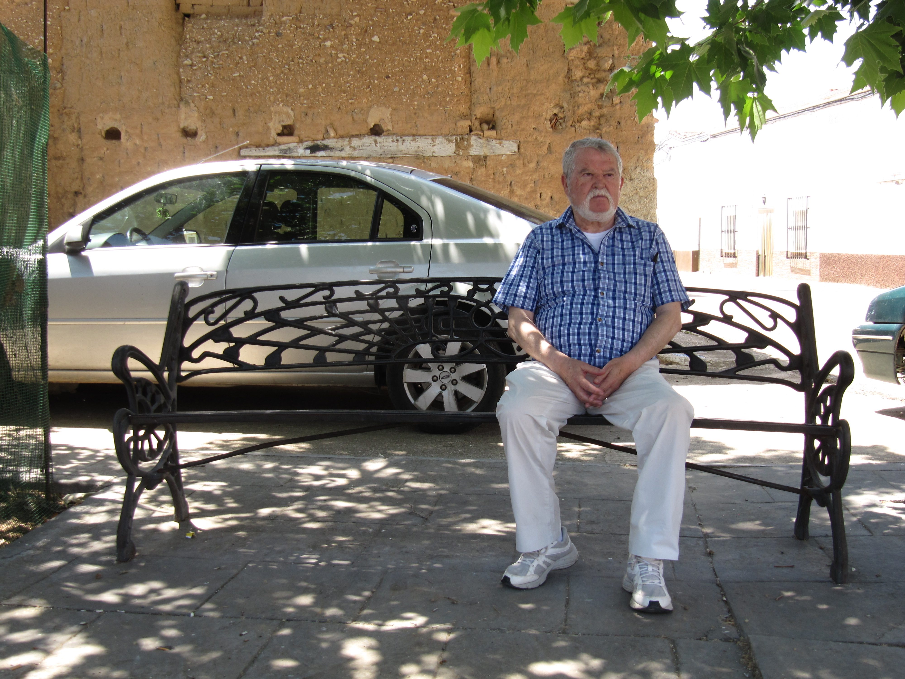
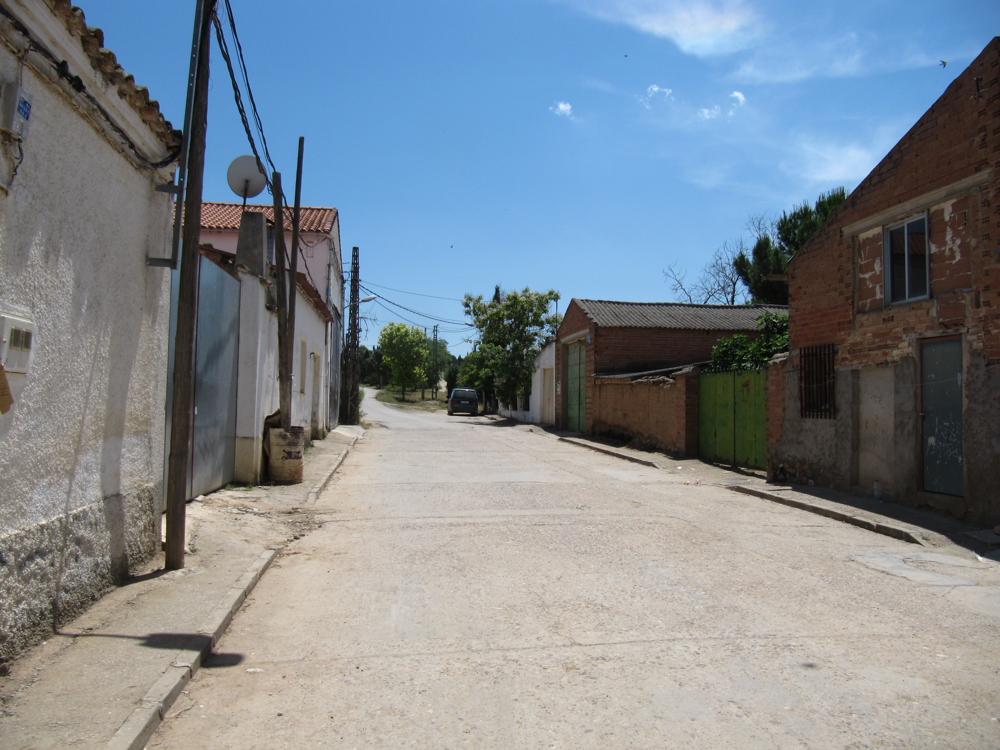

Reportaje 4
La campiña de la provincia de Guadalajara siempre ha sido famosa por su clima favorable a los cultivos y las amplias terrazas fluviales, y sus producciones se han ido especializando sobre todo alrededor de un producto muy apetecible: el espárrago verde.
 Un campo de espárragos en Torre del Burgo.
Un campo de espárragos en Torre del Burgo.
Más de la mitad de la producción se exporta fuera de España, sobre todo entre Alemania y Francia, y debido a esto las hectáreas de la provincia dedicadas al producto se han ido incrementando cada vez más durante los últimos diez años. Hoy son casi un millar, la producción viaja a ritmos crecientes y este desarrollo necesita el aporte masivo de una mano de obra que no puede ser solamente nacional. O mejor, de una mano de obra que no puede ser nacional.
El ciclo de recolección empieza el 20 de marzo y dura unos dos meses, más o menos hasta el 2 o 3 de julio; durante esta temporada, cientos de inmigrantes, especialmente rumanos, búlgaros y marroquíes se van a trabajar a los inmensos campos aislados bajo el control de las empresas del territorio. Hay tres y pertenecen a oriundos, cuyos pueblitos están ubicados en los extremos de las tierras cultivadas.
Entre el total de estos pueblitos, que son 288, cerca de treinta tienen un porcentaje de extranjeros igual o superior al 20% de la población total.
Torre del Burgo y Heras de Ayuso son los dos municipios que más destacan en este conjunto de pueblos. Sus superficies no llegan a los 15 km cuadrados, y ambos tienen un número de empadronados inferior a 300 personas. Según los datos del padrón continuo del INE, en Heras de Ayuso son extranjeros el 55% de los residentes, y en Torre del Burgo esta proporción llega al 75%.
Estos dos conjuntos de chalets, naves y asfalto están rodeados solamente por campos y vistas salvajes, hectáreas de tierra fértil y miles de olivos plantados ordenadamente en filas paralelas.
Estos dos conjuntos de chalets, naves y asfalto están rodeados solamente por campos y vistas salvajes, hectáreas de tierra fértil y miles de olivos plantados ordenadamente en filas paralelas.
No es difícil darse cuenta de que se está entrando en una realidad completamente desconectada de los ritmos que gobiernan las metrópolis españolas: para ir a Torre y Heras solamente hay dos autobuses al día, uno a las dos y uno a las cinco de la tarde. Parten de la estación de Guadalajara, el conductor te lleva solo bajo solicitud expresa, y si quieres volver a la ciudad tienes que hacer autostop. Raramente hay otra alternativa, el autostop “se usa mucho, aquí hay buena gente”, explican algunos habitantes.
 El alcalde de Heras de Ayuso.
Si se lo pides, el conductor del pequeño autobús te deja en una de las calles de Heras de Ayuso que asoman a la carretera. Hay mucho sol, pocos árboles y campos en todos los lados.
En los límites de los cultivos vacíos me atienden unas naves, algún coche, viejas casitas blancas y dos personas que están intentando arreglar algo en un tractor.
Son del este Europa y dicen que el ayuntamiento se encuentra en la única plaza del pueblo, que dista unos 800 metros: “subes arriba, te das la vuelta al lucernario y allí está el ayuntamiento”.
La plaza se encuentra entre el edificio municipal y una parroquia cerrada, y tiene algunos bancos. El alcalde, Jesús Sierra Lumbreras, me está esperando sentado a la sombra de un árbol.
Me invita a sentarme. Es serio, pero predispuesto a hablar y está de acuerdo en dejarme entrevistar algunos inmigrantes. La mayoría ahora están trabajando, hay pocas personas por el centro de Heras.
La primera frase que me dice sobre Heras de Ayuso es: “aquí hay algo de racismo”.
“Yo no lo permito ¡eh! – específica –, trato todos de la misma manera. Pero en Heras hay algo de racismo”.
Luego empieza a contar la historia del pequeño municipio: “Este municipio era un pueblo pequeñito; hace 20 años la gente se marchaba hacia la ciudad, y Heras iba desapareciendo. Pero los autóctonos son emprendedores, y pusieron un producto que es muy apetecible: el espárrago. El espárrago da dinero, la mayoría se exporta en Francia y Alemania… pero el español no corta espárrago en los campos. Entonces, alrededor de este producto se han contratado cientos de inmigrantes, sobre todo del este de Europa.
Este es un pueblo lleno de búlgaros, marroquíes y algunos rumanos.”
Jesús Sierra me explica que la mayoría de la población inmigrante llega a principios de marzo, cuando empieza la temporada: “Aquí rige una situación que cuando llega la estación de recogida, hasta julio, se viene toda la mano de obra.
Luego, cuando termina el proceso de recolección, muchos se van a Valencia, donde hay las naranjas, o donde se recoge la uva.”
Muchos, pero no todos: en Heras de Ayuso la mayoría son familias, y los niños se van al colegio a Humanes, pueblo cercano. De esta manera, los hombres que se van por los campos de España o Europa dejan aquí prole y esposas.
Aquí no trabajan solamente los hombres. Las mujeres que labran en el campo son muchas, y además, especifica el alcalde, “ahora hay la recogida, pero, después, este producto requiere un proceso de limpieza y empaquetado.”
En Heras de Ayuso, me explica el alcalde, esta población no española se distribuye en un total de 22 viviendas. Estas no están entregadas por las empresas: “Son las peores viviendas del pueblo, a menudo un poco destrozadas, y estuvieron un tiempo en régimen de venta. Pero, como que nadie las compraba, se pusieron en alquiler, y ahora están alquiladas a los inmigrantes, que arreglan todo como pueden”. Cuando pregunto – un poco ingenuamente – al alcalde cuanta diferencia hay entre el alquiler pagado por un búlgaro y el pagado por un español, él me contesta que “aquí no hay españoles que pagan alquiler”. En Heras de Ayuso los españoles son los dueños. Españoles e inmigrantes no viven por separado. Los vecinos se acuestan el uno al otro, pero esto importa poco en el resultado final: de lunes a viernes, en el pueblo casi solamente se encuentran extranjeros.
 Heras de Ayuso.
Hoy, que es jueves, la callecitas de Heras están vacías. “Generalmente – me dice Jesús – los oriundos se vienen de veraneo o durante los fines de semana”, cuando no trabajan y quieren gozar del paisaje bucólico de sus pueblos.
Durante el resto de los días, este pequeño municipio en el que no hay una farmacia o una tienda de alimentación, está casi totalmente habitado por familias búlgaras y marroquíes.
Entonces le pregunto por qué, poco antes, me dijo que en Heras hay “algo de racismo”.
Jesús me dice que lleva 22 años de alcalde aquí: “Yo pude ver episodios de racismo más que ninguno”.
En Heras de Ayuso hay tres fiestas municipales al año: “Cuando hay las celebraciones del pueblo – me explica – el ayuntamiento invita a toda la población, pero los inmigrantes no van, y esto porque ven gestos desagradables por parte de los españoles. Yo trato a todo el mundo igual – quiere especificar – autóctono o no, para mí es igual”.
En Heras de Ayuso no hay cursos de lengua castellana ni programas específicos de integración para migrantes. La vida en el campo empieza a las nueve de la mañana, hay una pausa al mediodía y se curra hasta las ocho de la tarde. Luego a casa, donde las mujeres cocinan y la familia se reúne.
Vazilka, por ejemplo, trabaja en los servicios de limpieza del ayuntamiento. Su padre Iván es jardinero, cuida las calles y se ocupa de otras pequeñas, importantes, tareas para el pueblo.
Hay muchos niños aquí, y la casi totalidad son búlgaros, rumanos y marroquíes. Van al colegio a Humanes, otro municipio que colinda con Torre y Heras, y estudian con compañeros de nacionalidades diferentes.
Estos niños son españoles, porque sus familias llegaron directamente en los campos de España hace 13 o 15 años.
Vazilka tiene tres hijos: uno de catorce, uno de siete y un pequeño de 4 meses. Cuando le pregunto si tienen amigos de origen español, ella me contesta que no: “tienen solamente amigos de orígen búlgaro, porqué aquí de la edad de mi hijos no hay españoles, todos son búlgaros. Pero cuando llega el fin de semana sí, los niños suelen jugar juntos”.
Me confirma que con su familia y amigos prefieren no irse a las fiestas oficiales del municipio: “No nos gusta mucho irnos a las fiestas. Hay alguno que no nos hablan, y además tenemos nuestras fiestas. “ Tienen muchos amigos y en la familia son nueve personas. Aquí la vida se transcurre de manera tranquila, e Ivan y Vazilka me dicen que se sienten contentos: “En el pueblo todo muy bien. El trabajo muy bien, aquí nos gusta.”
Para terminar nuestra visita, Jesús me lleva al único bar del pueblo. Hoy está casi vacío: hay dos niños que juegan con una bicicleta y el chico encargado del bar, que está detrás de la barra.
Se llama Miguel, nació en Rumania y llegó en España con su madre cuando tenía 5 años; vive en Guadalajara y viene todos los días aquí para trabajar. Me acoge con una sonrisa maja, yo le pregunto que tal la vida en el pueblo: “Durante la semana no muy bien. Se gana poco, hay pocas personas. Cuando llega el fin de semana y viene gente, entonces hay más trabajo.”
Heras de Ayuso se anima el viernes, sábado y domingo. La plaza se llena de niños y el bar de adultos, y es en estos días, me dice Miguel, que se notan las distancias: “Yo veo dos países distintos en el mismo municipio”, me dice.
“Cuando vienen búlgaros con españoles – continúa – generalmente se meten a beber en dos salas separadas, y cuando cierro la sala grande porque hay fiestas de pueblo, los búlgaros se meten por esta parte y los españoles por esa”, y me indica el lado opuesto de la sala.
 El único bar de Heras.
El único bar de Heras.
Son las 2 de la tarde y lo que separa Heras de Ayuso de su pueblo más cercano, Torre del Burgo, es un kilómetro de asfalto ardiente y paisajes naturales donde el cultivo del espárrago domina por completo.
La superficie de este segundo municipio es más pequeña, no llega a los 5 kilómetros cuadrados, pero las viviendas se distribuyen de manera distinta. Grupos de chalets recién reformados se alternan con filas de edificios más viejos y pequeños; todo distribuido encima de pequeñas alturas y rodeado por la vasta ruta de la agricultura.
Torre del Burgo es muy conocido en la crónica nacional. Famoso por ser el segundo pueblo en España en número de inmigrantes empadronados, es el pueblo más cercano a los establecimientos de cultivo del espárrago, así como a los campos.
A esta hora está casi completamente desierto, no hay niños en las calles.
El único bar es una estructura en madera con una terraza bastante grande. Se encuentra a unos quinientos metros de la gasolinera, y un hombre está sentado bebiendo una cerveza.
La barista es una mujer, ambos son del este Europa.
Ella es más tímida, me sugiere salir y hablar con el hombre: “El es búlgaro”.
Hablamos tranquilamente de la vida en el pueblo. No parece extrañado de que una desconocida le pregunte cosas de su vida.
“Aquí se está bien – me dice bebiendo de su botellín. En Torre del Burgo, extranjeros y españoles son como una familia grande. No hay problemas de integración, y sí, hay un curso gratuito de Castellano”.
 Torre del Burgo.
Torre del Burgo.
Hace mucho calor, hay poca gente en la calle y toda la gente que hay no es de origen español.
Se agrega a nosotros una portuguesa con sus perrillos, y tres chicos búlgaros se sientan a una mesa a tomar algo. Tienen entre los 20 y 25 años, han llegado hace poco de Grecia y no hablan español. Uno de ellos me explica en inglés que ya trabajaban en los campos, y durante el año van de un cultivo a otro por varias partes de España y Grecia, donde las empresas les distribuyen en base a las necesidades de la temporada. Me entretengo con ellos de manera totalmente natural. La vida en el pueblo es tranquila, dicen, pero no se llevan muy bien, pronto se volverán para Grecia. Debido a las diferencias en el idioma, los chicos no consiguen explicarme mucho más.
Poco después llega un hombre con su coche. Le hablo de lo que estoy haciendo y me pregunta si quiero ir a ver la fábrica de empaquetado del espárrago: “Tengo que ir allí porque soy el asesor fiscal de una de las tres empresas del territorio. Si quieres venirte, a lo mejor encuentras algún empadronado en Torre del Burgo con el que puedas hablar”. Las calles a esta hora están vacías. Muy feliz con la propuesta, acepto la invitación.
 Un establecimiento en Torre del Burgo
Un establecimiento en Torre del Burgo
El establecimiento para el trabajo y el empaquetado es una nave que se encuentra no muy lejos de la gasolinera y del bar. Huele agradablemente a espárrago, y por detrás de las máquinas un poco ruidosas hay cientos de personas que trabajan tranquilamente en la cadena. Algunos lavan, otros cortan, otros empaquetan, otros cargan cajas…
Son hombres y mujeres y todos llevan batas y gorras del mismo color de los espárragos, verde brillante.
La oficina es un pequeño espacio que se asoma al área de trabajo, y aquí me acogen los jefes de la empresa. Me dejan hacer fotos y me dicen que no hay problema en hablar con los trabajadores.
Hablo con uno de los encargados en la cadena de montaje, de origen búlgaro. Es alto y lleva una bata blanca y bien planchada. Me dice que llegó a Torre del Burgo hace 13 años con su familia,siempre ha trabajado en los cultivos de espárrago y la empresa para la que trabaja le ayudó con las gestiones del traslado. Cuando le pregunto cómo es la vida en el pueblo, él me contesta simplemente: “estamos bien. La gente vive bien y está contenta”. Él nunca ha recibido ayudas y nunca ha asistido a cursos de español. Él tiene su trabajo, la mujer está en casa, el día en el pueblo transcurre entre una cosa y la otra.
Poco antes, un chico originario de Torre del Burgo me había explicado que, con respecto a Heras de Ayuso, la distribución de la población es un poco diferente: “ Aquí los trabajadores están más a su rollo que en Heras, no se mezclan mucho. Toda la parte de abajo”, y me indica las naves que colindan con los campos de espárrago “es donde viven los trabajadores. La parte de arriba, la que se distribuye por las colinas, donde están los chalets, es al cien por cien de españoles. La mayoría están en el negocio de los cultivos, hay unos que están de labor en el campo y algunos que se suben todos los días para Guadalajara. La diferencia es que en Heras de Ayuso la situación me parece más descontrolada”.
Mi excursión en la campiña de Guadalajara se concluye con una vuelta por las inmensas tierras vacías, donde para hoy ya se han acabado todos los espárragos, y voy a tomar un aperitivo al bar con dos de los jefes de la empresa. La chica búlgara encargada nos pone algo de beber y un poco de chorizo. Uno de ellos, un señor gordo que siempre está acompañado por su minúscula perrilla, dice que nació en Torre del Burgo y que se pasó la juventud a trabajar en los campos. Cree que hoy los jóvenes no tienen ninguna gana de trabajar, y no se refiere solamente a sus compaisanos: “Los jóvenes que trabajan aquí son buenos chicos, pero el trabajo no le apetece. Yo no soy racista –dice, sonriendo a la barista con confianza e ironía - pero una cosa tengo que confesarla: hay muchas, demasiadas diferencias, y a menudo se notan. Ahora, por ejemplo, los marroquíes están de ramadán y no pueden comer en todo el día, y esto les hace claramente menos productivos.”
La jornada de labor se está acabando, pronto todos los obreros empezarán a salir de los campos y de las naves para reunirse con sus familias. Nadie sabe si pasarán autobuses por Torre del Burgo, y seguramente ningún vehículo público se acercará a Heras de Ayuso. Empiezo a volver hacia los ritmos metropolitanos, y lo que me dejo atrás es una realidad, en muchos sentidos, distante.